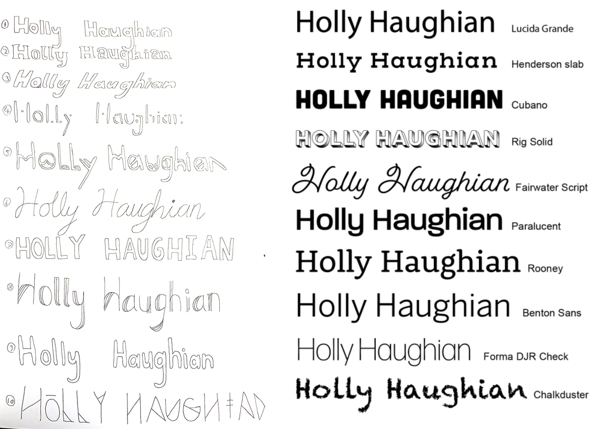

Problem
I wanted to create a brand that reflected my personality and style through visuals. My problem was being a first year interaction design student, I didn’t know who I was as a designer. Tackling this required me to carry out extensive research and many sketches.
Role: Branding, illustration, typography, web design & front end development.
Tools: Adobe Illustrator, Adobe XD, Visual Studio Code using HTML and CSS.
Process
My ideas ranged from a currency app to a single destination app whilst considering past travelling experiences I've had. I based it around the National Parks in America, I wanted to chose a location based app and I have been to two national parks so the app was personal to me. My target audience are adults visiting the parks to educate them and their families on them.
Monogram
To kick off the design process, I carried out over 100 different sketches to really explore every possible design. We had many content audits and very helpful feedback which helped steer me in the right direction when designing, there was a lot of possibilities when it came to working with two H’s so narrowing it down was a challenge. I loved the start of this process as I timed myself to do so many designs in ten minutes.
However, as time went on I overthought the sketches and lost my creative flow. This resulted in me digitising 3 monograms that didn’t work out. I solved this problem by going back to paper with a fresh mind and finally reaching a design that worked.
Before Refinements
After Refinements
I refined the design with the help of Illustrator’s rulers, this helped my monogram have a clean, professional finish. I wanted to go for fun, vivid and strong colours as the design contains sharp lines and edges so I wanted playful colours to contrast this, portraying both a fun, welcoming side and a more sophisticated one.

Word Mark
My next challenge was creating a word mark to compliment the monogram. I began sketching and then digitising possible word marks. I started experimenting with a lot of different typeface styles and sizes, as well as how I would position it with my monogram.

I was looking for a simple word mark style as my monogram is quite bold. I found it challenging picking a typeface that didn’t clash with the monogram’s personality. I had narrowed it down to 3 fonts which were Rig Solid, Paralucent and Lucia Grande. Lucia Grande flowed well with my monogram and gives an inviting tone through it’s san-serif look, however the word mark is an area of my brand that I want to work on as I think it could have more potential.
I applied the same shade of blue as the one in my monogram so that they kept in tone with each other.